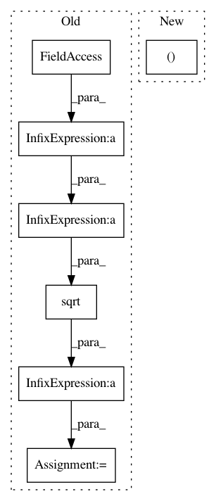

6432d83fc96f607d48117681c9de71ce7e7ba8ec,neurodsp/sim/combined.py,,sim_noisy_oscillation,#,11
Before Change
// Normalize by variance
oscillation_var = np.var(oscillation)
noise_var = np.var(noise)
noise = np.sqrt(noise**2 * oscillation_var /
(noise_var * ratio_osc_var)) * np.sign(noise)
// Combine oscillation and noise
osc = oscillation + noise
After Change
oscillation = sim_oscillation(n_seconds, fs, freq, rdsym=rdsym)
// Normalize & combine signal
oscillation, noise = normalize_by_variance(oscillation, noise, ratio_osc_var)
osc = oscillation + noise
return osc
In pattern: SUPERPATTERN
Frequency: 3
Non-data size: 7
Instances
Project Name: neurodsp-tools/neurodsp
Commit Name: 6432d83fc96f607d48117681c9de71ce7e7ba8ec
Time: 2019-03-17
Author: tdonoghue@ucsd.edu
File Name: neurodsp/sim/combined.py
Class Name:
Method Name: sim_noisy_oscillation
Project Name: SheffieldML/GPy
Commit Name: e906da0309620bad16c4e36a040e407c0c131c2d
Time: 2015-09-06
Author: z.dai@sheffield.ac.uk
File Name: GPy/kern/_src/mlp.py
Class Name: MLP
Method Name: update_gradients_diag
Project Name: neurodsp-tools/neurodsp
Commit Name: 6432d83fc96f607d48117681c9de71ce7e7ba8ec
Time: 2019-03-17
Author: tdonoghue@ucsd.edu
File Name: neurodsp/sim/combined.py
Class Name:
Method Name: sim_noisy_bursty_oscillation